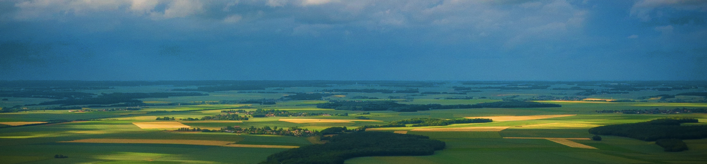
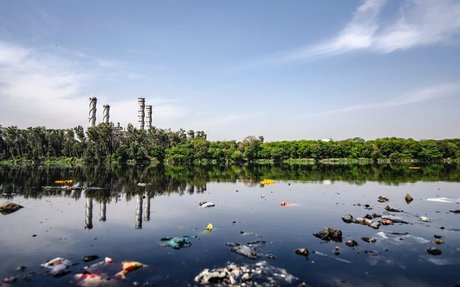
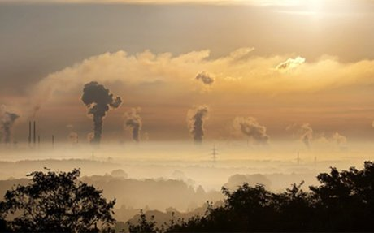
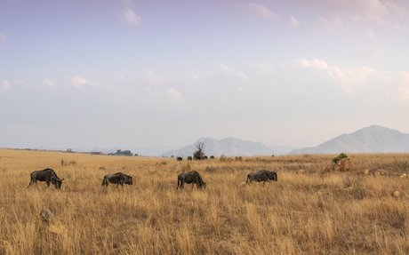
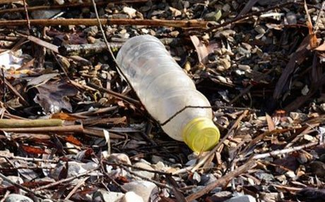
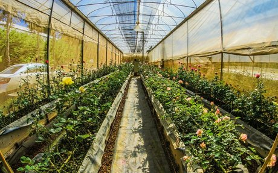

You can learn about various type of Resources.


RECYCLING GREYWATER
Greywater is wastewater from any
household source other than toilets.
Greywater makes up roughly 60% of
house holdwater.A greywater recycling
uses water primarily from showers and
bathtubs.It can also capture water from
bathroom or wastewater from the utility
sink and washing machine.
READ MORE
RENEWABLE ENERGY
A one-year field test in South Africa
revealed that using a solar stove,
an average family can save 30 litres
of kerosene, 30 kg of LPG and about
1 tonne of firewood per year, which
comes to an estimated 1 tonne of
carbon dioxide reduction annually.
This startling statistic, when combined with
the fact that we receive 10-15,000 times more
solar energy on the Earth than we use, opens
up amazing possibilities for the use of the sun's
energy to meet out needs.
READ MORE

AIR PARTICLES AND AIR QUALITIY
The air we breathe has a lot do
do with our health. As we breathe
in fresh air, our lungs absorb oxygen
from the air and pass it into our blood
stream so it can be transported throughout
our bodies. Oxygen is important for our
whole body to have the energy it needs to survive.
READ MORE

HABITAT MODEL
A habitat is the natural environment in
which plants and animals live. This is
where they get their food, water and
shelter. They also breed in their natural
habitat. The climate of a habitat, the food
available in the habitat, competition from
other species- these are some of the factors
that determine whethe
READ MORE

TEH BIG DIG
Every year each household contributes
waste products by using and consuming
disposable products and materials.
Sometimes these things are recycled,
like many paper, plastic and glass
products.Other times the items are re-used,
like old tires that are chipped and used
to build playground surfacing materials.
Some people even save kitchen scraps to
add to a compost pile in their yard.
READ MORE

ORGANIC GARDEN
Organic gardening is the use of natural
compost and manure to fertilise and
grow plants and flowers. No harmful
chemicals or pesticides are used to protect
the plants. As opposed to gardening that
uses pesticides and other chemicals, organic
gardening is truly natural.
READ MORE